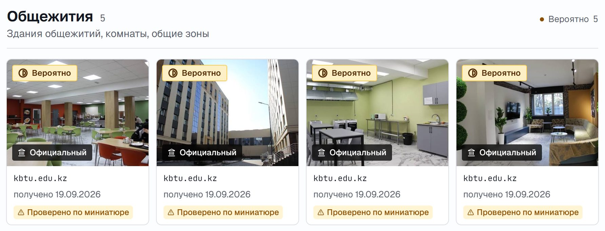
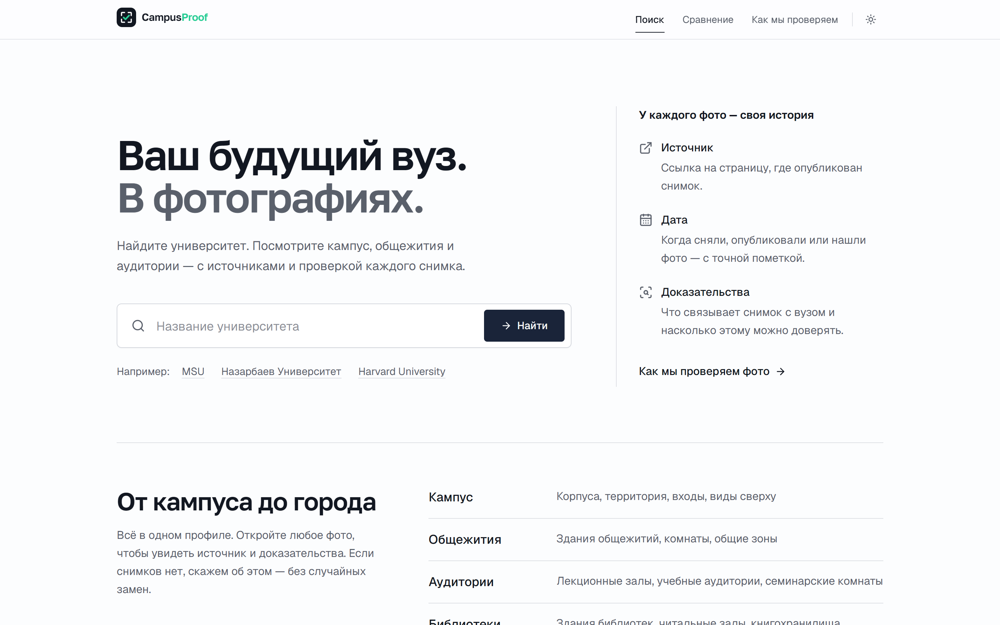
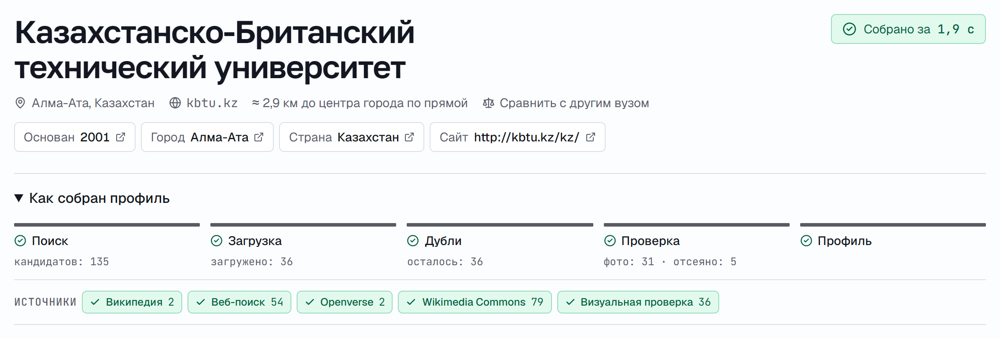
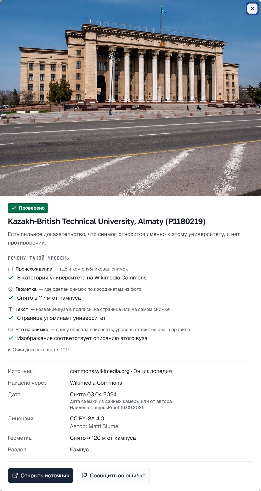
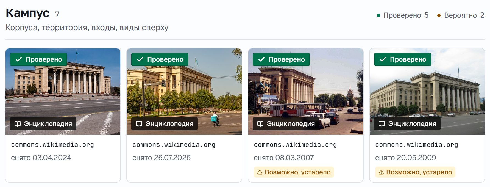
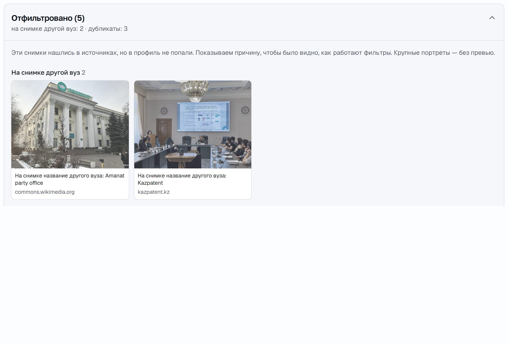

Проблема
CampusProof
Настоящие фото университета — у каждого источник, дата и уровень доверия.
Абитуриенты выбирают вузы, в которые не могут приехать. Сайты вузов показывают отретушированный маркетинг, а настоящие фото разбросаны, дублируются, устаревают или сняты в другом месте. Поиск картинок не говорит, какому фото верить.
Команда Phantomlanc3rs · LOCUS Startup Hackathon 2026 · кейс 01
самых перспективных изображений из открытых источников мы отклонили: дубли, логотипы и документы, мелкие файлы, портреты, название другой организации — 137 из 513 по 14 вузам.
Решение
Доказательства, а не картинки: честное «не нашли» лучше чужого фото.

Прод, КБТУ: общежития с сайта самого вуза — у каждого фото источник, дата и уровень доверия.
Демо · реальный прогон на проде · КБТУ · 19.09.2026

«КБТУ», «MSU» и даже «Nazarbaev Univercity» работают.

135 кандидатов из Commons, веб-поиска и Openverse → 36 проверено → 31 фото, 5 отсеяно. Собрано за 1,9 с (источники в кеше).

Gemini описывает снимок, очки считает код: 100 очков → ✓ Проверено.

8 разделов, 4 фильтра, карта и сравнение — у каждого фото источник в один клик.
Технологии · как это устроено
Потоковый пайплайн на бесплатных и открытых API — у каждого этапа свой тайм-аут.
Почему наш подход
Одни и те же вопросы — с ответом на каждом фото.
Реальный пример, профиль КБТУ: фото с вывесками «Amanat party office» и «Kazpatent» визуальная проверка отметила и перенесла в «Отфильтровано» — с причиной для пользователя.

Результаты · измерено на проде
Замеры на проде с выборкой и датой. Цели помечены как цели.
✓ Проверено · ◐ Вероятно · ? Не подтверждено — 1 105 фото в 42 профилях. Источники: docs/qa-report-2026-09-19.md, eval/results/2026-09-19-evidence-audit.md
Настоящие общежития, аудитории и кампус до поступления — и понятно, какому фото верить.
Профили со ссылками на источники; JSON-эндпоинт профиля уже есть для интеграции.
Стандарт прозрачности для фото на открытых данных — с авторами и лицензиями.
Команда Phantomlanc3rs
LOCUS Startup Hackathon 2026 · кейс 01 «Визуальный профиль университета».
План развития
От фото, которым приходится верить на слово, — к доказательствам, которые проверяются в один клик.